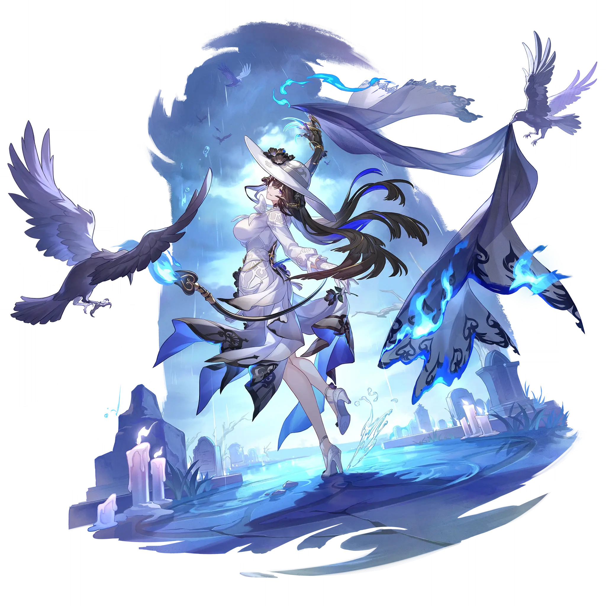

The Dahlia
Best The Dahlia build guide for Honkai Star Rail. See The Dahlia's best Relics, Light Cones, teams, Eidolons, Trace priority, and how to play The Dahlia.
🔍 Detail Skill
Semua skill aktif dan pasif beserta efeknya.
Deals Fire DMG equal to #1[i]% of The Dahlia's ATK to one designated enemy.
Deploys a Zone that lasts for 3 turn(s), with the Zone's duration decreasing by 1 at the start of The Dahlia's turn. Then, deals Fire DMG equal to #1[i]% of The Dahlia's ATK to one designated enemy and their adjacent targets. While the Zone is active, increases all allies' Weakness Break Efficiency by 50%. Toughness Reduction taken by enemy targets while not Weakness Broken can be converted into S
When entering combat, The Dahlia regenerates 35 Energy and grants "Dance Partner" to this unit and the teammate who triggered combat. Whenever there is no other "Dance Partner" on the field, grants "Dance Partners" to this unit and the teammate with the highest Break Effect. After a "Dance Partner" attacks a Weakness Broken enemy target, the Toughness Reduction from this attack is converted into 1
After using Technique, creates a Special Dimension that lasts for 20 second(s). Enemies within this dimension will not actively attack ally targets. After entering combat with enemies in the Special Dimension, The Dahlia immediately deploys her Skill's Zone, and converts the combat-triggering Toughness Reduction into 1 instance of Super Break DMG at 60% against enemy targets that are Weakness Brok
⚔ Light Cone Terbaik
Diurutkan dari yang paling kuat. Persentase menunjukkan performa relatif terhadap pilihan terbaik.
💎 Relic Set Terbaik
Set terbaik untuk karakter ini, diurutkan berdasarkan prioritas.
📊 Stat Utama
Stat yang dicari pada tiap slot.
👥 Tim yang Direkomendasikan
Karakter yang sering dipasangkan bersama The Dahlia.
 Rappa
Rappa
 Boothill
Boothill
 March 7th • The Hunt
March 7th • The Hunt
 Tingyun • Fugue
Tingyun • Fugue
🔗 Lanjutkan
Build ini dirangkum dari Prydwen Institute. Starwise tidak menghitung sendiri. Angka bisa berubah setelah patch atau karakter baru rilis.